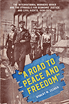
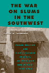
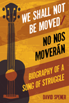

 |
"A Road to Peace and Freedom"
The International Workers Order and the Struggle for Economic Justice and Civil Rights, 1930–1954
Zecker, Robert M.
The history of the International Workers Order's struggle to enact a social-democratic, racially egalitarian vision for America
256 pp • 6x9 • Spring 2016
paper 978-1-4399-1337-6
cloth 978-1-4399-1336-9 |
|
American Dunkirk
The Waterborne Evacuation of Manhattan on 9/11
Kendra, James and Tricia Wachtendorf
How an unplanned maritime response to the 9/11 disaster showed creativity, improvisation, and the power of community-based resources
156 pp • 5.5x8.25 • Spring 2016
paper 978-1-4399-0821-1
cloth 978-1-4399-08204- |

|
Ball Don't Lie!
Myth, Genealogy, and Invention in the Cultures of Basketball
Colás, Yago
Examining the nature, origin, and purpose of popular myths in basketball, past and present
226 pp • 6x9 • Spring 2016
paper 978-1-4399-1243-0
cloth 978-1-4399-1242-3 |
|
Choosing State Supreme Court Justices
Merit Selection and the Consequences of Institutional Reform
Goelzhauser, Greg
The first systematic, comprehensive evaluation of whether merit selection actually leads to better judges
156 pp • 5.5x8.25 • Spring 2016
paper 978-1-4399-1340-6
cloth 978-1-4399-1339-0
|

|
Earthly Plenitudes
A Study on Sovereignty and Labor
Gullì, Bruno
Can life flourish without sovereignty?
New in Paperback!
200 pp • 6x9 • Spring 2016
paper 978-1-59213-980-4 |
|
Exploring the Roots of Digital and Media Literacy through Personal Narrative
Edited by Hobbs, Renee
Leading scholars reveal insights into the core concepts and historical roots of digital and media literacy education
226 pp • 5.5x8.25 • Spring 2016
paper 978-1-4399-1158-7
cloth 978-1-4399-1157-0 |
|
Fashioning Diaspora
Beauty, Femininity, and South Asian American Culture
Reddy, Vanita
How South Asian Americans' engagements with Indian beauty and fashion help structure their uneven access to social mobility, capital, and citizenship
280 pp • 6x9 • Spring 2016
paper 978-1-4399-1155-6
cloth 978-1-4399-1154-9 |
|
Ghostly Encounters
The Hauntings of Everyday Life
Waskul, Dennis and Michele Waskul
How people experience ghosts and hauntings, the ways they make sense of uncanny experiences, and the consequences thereof
164 pp • 5.5x8.25 • Spring 2016
paper 978-1-4399-1289-8
cloth 978-1-4399-1288-1 |
|
Inner Speech and the Dialogical Self
Wiley, Norbert
How the dialogical self discovers the appropriate pathways for guiding us through our lives
218 pp • 6x9 • Spring 2016
paper 978-1-4399-1328-4
cloth 978-1-4399-1327-7 |
|
Liberating Service Learning and the Rest of Higher Education Civic Engagement
Stoecker, Randy
Challenging—and changing—our thinking about higher education community engagement
228 pp • 6x9 • Spring 2016
paper 978-1-4399-1352-9
cloth 978-1-4399-1351-2 |
|
Mavericks, Money, and Men
The AFL, Black Players, and the Evolution of Modern Football
Ross, Charles K.
Examining the black player experience in the American Football League
212 pp • 6x9 • Spring 2016
paper 978-1-4399-1307-9
cloth 978-1-4399-1306-2 |
|
The Muslim Question in Europe
Political Controversies and Public Philosophies
O'Brien, Peter
Arguing that controversy around the politics of Islam in Europe is best understood as a contest of intra-European political philosophies
298 pp • 6x9 • Spring 2016
paper 978-1-4399-1277-5
cloth 978-1-4399-1276-8 |

|
A Nice Place to Visit
Tourism and Urban Revitalization in the Postwar Rustbelt
Cowan, Aaron
An engaging, first-of-its-kind historical analysis of four Rustbelt cities' efforts to remake themselves into tourist locales in the postindustrial era
234 pp • 6x9 • Spring 2016
paper 978-1-4399-1346-8
cloth 978-1-4399-1345-1 |
|
The Parker Sisters
A Border Kidnapping
Maddox, Lucy
The remarkable story of an 1850s kidnapping of two free black girls in rural Pennsylvania after the passage of the Fugitive Slave Act
256 pp • 6.125x9 • Spring 2016
cloth 978-1-4399-1318-5 |
|
The Politics of Staying Put
Condo Conversion and Tenant Right-to-Buy in Washington, DC
Gallaher, Carolyn
Analyzes whether tenant right-to-buy programs may mitigate displacement in fast-gentrifying cities like Washington, DC
288 pp • 6x9 • Spring 2016
paper 978-1-4399-1265-2
cloth 978-1-4399-1264-5 |
|
The Struggling State
Nationalism, Mass Militarization, and the Education of Eritrea
Riggan, Jennifer
Examining Eritrean teachers' paradoxical role of educating students forced into the military
254 pp • 6x9 • Spring 2016
cloth 978-1-4399-1270-6 |
|
Transformations of Warfare in the Contemporary World
Edited by Torpey, John and David Jacobson
Essays that explore some of the profound changes taking place in the realm of warfighting today
192 pp • 5.5x8.25 • Spring 2016
paper 978-1-4399-1313-0
cloth 978-1-4399-1312-3 |
|
Undocumented Fears
Immigration and the Politics of Divide and Conquer in Hazleton, Pennsylvania
Longazel, Jamie
How the local politics of immigration pit working people against one another
224 pp • 6x9 • Spring 2016
paper 978-1-4399-1268-3
cloth 978-1-4399-1267-6
|
 |
The War on Slums in the Southwest
Public Housing and Slum Clearance in Texas, Arizona, and New Mexico, 1935-1965
Fairbanks, Robert B.
The untold story of public housing and urban renewal in the American Southwest
New in Paperback!
256 pp • 6x9 • Spring 2016
paper 978-1-4399-1116-7 |
 |
We Shall Not Be Moved/No nos moverán
Biography of a Song of Struggle
Spener, David
The international travels, history, and influence of a traditional song
166 pp • 5.5x8.25 • Spring 2016
paper 978-1-4399-1298-0
cloth 978-1-4399-1297-3 |
|
Whisper Not
The Autobiography of Benny Golson
Golson, Benny and Jim Merod
A funny, touching, and insightful memoir of one of the last surviving members of the greatest generation of American jazz musicians
328 pp • 6x9 • Spring 2016
cloth 978-1-4399-1333-8 |
Click here to download the catalog (pdf). |